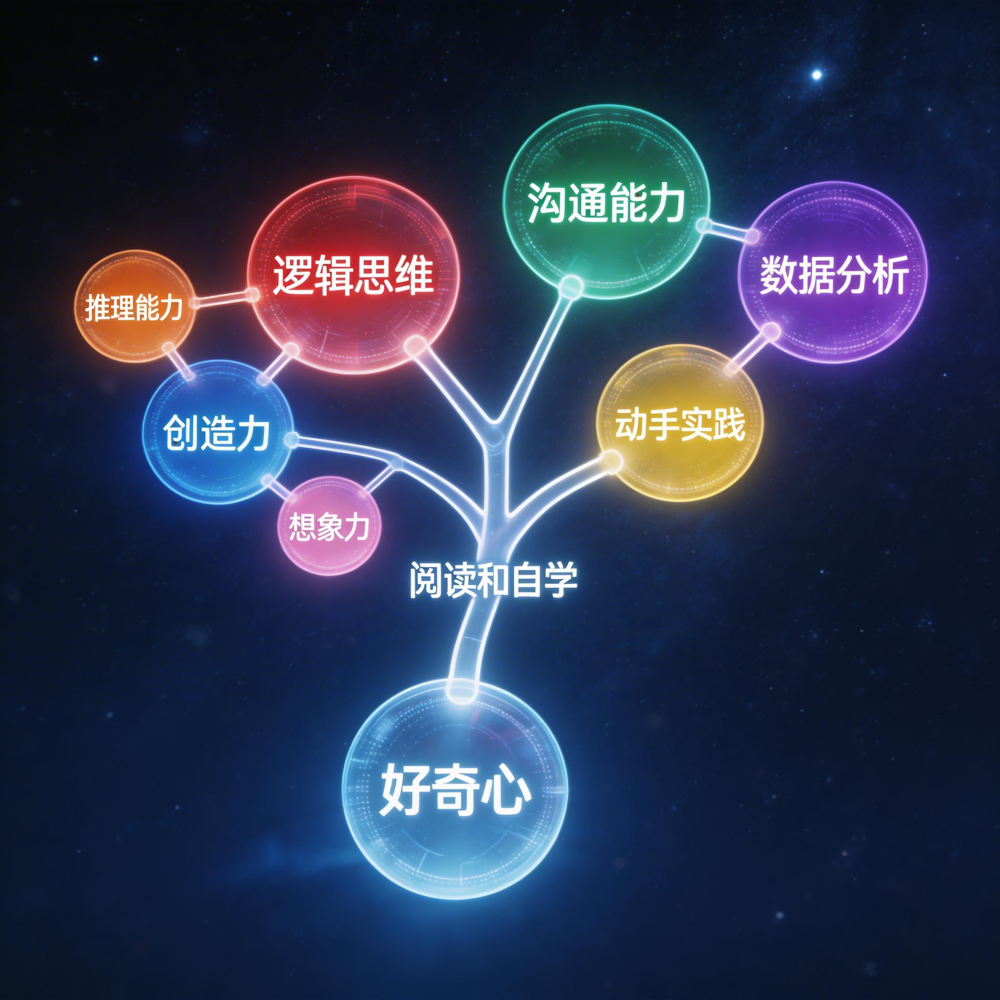

豆摇锋 · 周报会
Be Useful
不要追逐荣耀，追逐工作
三个 builder 的周度交流 + 一位做客嘉宾的旁观者视角
2026 年 3 月 29 日 · 第五期
"Be useful. Don't aspire to glory. Aspire to work."
SCROLL ↓
白豆篇 · 能力构架地图
让 AI 给自己画一张能力地图
白豆让 AI 爬取了自己所有的文章，写了一份「侧写」，然后模仿摇摇年初提出的七层构架地图，做了一个属于自己的版本。

底层驱动是好奇心。根能力是阅读、信息处理、语言能力、自学能力和行动力。然后产品的差异化——我要赶紧把之前做的那些小工具都上线，因为大家都在说「用 AI」，但没人拿出做成的东西。
—— 白豆
关于 AI 对自己的形容——「极度自律」，白豆说他不喜欢这个词。他更希望被描述为 helpful、热情驱动的人，因为做这些事情的内在感受不是苦行，而是兴奋。
别人说自律，可能是因为没有达到自己想要的状态。但如果用这个词形容我，我会觉得我已经在那种状态里了。我跟别人不一样——我是真的很兴奋，做这些东西不会感觉到累。
—— 白豆
白豆篇 · 产品落地
知识库项目，5 分钟的演示
白豆去某企业高管家演示了 IMA + NotebookLM，对方一下子震惊了——新招的产品经理一两个月做的幻灯片，还没有 NotebookLM 五分钟做的好。高管当场说：开掉。
回来之后，白豆用 Claude Code 搭建了原型，核心洞察是：
个人做产品的优势在于——我可以集合不同的 API。视觉模型用阿里的，语义理解用豆包的，在不同场景下用不同模型。整体产品反而比单一平台更好。
—— 白豆
合同预计 15-20 万，这周末对方已经在谈具体条款了。
白豆篇 · 互动学习
马斯克的声音读英文，每个词都能高亮
白豆用 MiniMax 最贵的模型克隆了马斯克的播客声音，然后把一整本书（40 万字符，花了 140 元）做成了一个交互式英语学习工具：点哪句话念哪句话，每个词实时高亮。
技术路径很巧妙：先用 MiniMax TTS 生成音频，再用 Whisper 反向获取词级时间戳，最后用原书文本替换 Whisper 的转录错误——两套元数据拼合，就有了精准的逐词高亮播放器。
我问 AI 怎么实现，它告诉我 MiniMax 本身就有时间戳功能。我说你怎么能不提醒我呢？然后让它更新到全局 memory 里——下次遇到类似的事，它就会自动问我要不要加上。
—— 白豆
另一个项目是用 Claude Code 做的 HTML5 互动教学页面——给学员解释「什么是互联网」「什么是浏览器」，带模拟搜索引擎、DNS 解析动画、画板互动，比纯文本的理解效率高出一个量级。
李墨玩篇
公众号排版的端到端革命
李墨玩做了一个 AI 公众号排版工具：把文章复制粘贴进去，AI 一键直出排版好的效果，直接复制到公众号就行。跟秀米的区别是——端到端，不用手动微调。
已经有真实用户在用了。「别有所思」和他老婆都给了正面反馈，说解决了很大的实际问题。老婆以前要先转 Markdown，再用扣子处理，再粘贴到排版网站——现在一步到位。
我从去年 3 月 16 号恢复更新，从每周两篇到每周四篇，坚持了一年，写了 20 万个字。回头去看的时候有一种震撼感——以前觉得做不到的事，居然没有断更过。
—— 李墨玩
关于写作风格，李墨玩承认之前太「绷着」了——写公众号和聊天的风格不一样，会隐藏、装饰。这周的反思是：要有更多自然情绪的流露，这样更能打动人。
摇摇篇 · AI 蒸馏同事
50% 的 KPI，9 个人的团队
摇摇今年被挂了 50% 的 KPI 做 AI 替代工作。老板的措辞很讲究：「只是在做技能的固化和经验的复用，要避免使用岗位和工作盘点这种词。」
目前统筹一个 9 人小团队，推动并行开发（而非线性等待），按「简单高频 → 复杂低频」排优先级。最大的挑战不是技术——是团队对这件事的认知还不充分。
周五我现场给他们编了一个 skill 和脚本，一边问一边做，然后展示效果。具象化的演示，比抽象地告诉他们怎么做，效果好得多。
—— 摇摇
有趣的细节：跟摇摇一起做 skill 的同事问——「回头到了我们这一步，要不要给里头埋一些什么东西？」
摇摇篇 · 深层思考
木桶的长板决定你的上限
摇摇引用了白豆分享的那张图（来自李继刚的一席演讲）：AI 时代，短板都被补齐到同一水平线了，决定你上限的是你自己的长板。
🔍
搜索引擎类比
很多人知道怎么用搜索引擎，但不知道该搜索什么。AI 也一样——你要问到问题的核心。
🧱
体系化思维
你可以用 AI 写代码了，但你不知道代码怎么 run 起来的。一直点 accept，别人也能做。
🎯
踩坑就是修炼
在 bug 中知道问题的根因，下次就会敏感。持续做出来东西，才能培育这种敏感度。
🤖
自己也是模型
把重复性工作解放出来之后，你的时间应该用来提升自己的 SOTA 能力。
被离职的同事——你要看让什么样的人离职。让优秀的人离职，他们蒸馏出来的知识就很强。但往往被离职的人，蒸馏出来的知识又不那么强。就很矛盾。
—— 摇摇
做客嘉宾 · Tuffy
你们好重啊
第三位做客嘉宾
自由职业者 · 投资人 · 每周录视频做周会 · 昨晚才第一次开机 Mac Mini 装 OpenClaw
Tuffy 这周的三件事很「轻」：
⚡
自动化交易
脉冲式的链上交易，因事件驱动有人工延迟，所以直接自动化——A 到 B，非常轻。
📊
信息流整理
每天推荐 30-60 家公司，穿越周期。连接 1000 家公司，覆盖中美韩港台日。
🧹
信息面板
一个没有特定人物和特定战争新闻的信息面板——过滤噪音，只看信号。
德州扑克教我一件事：碰到疯子，最好的办法是走。但如果你必须留在这个游戏里，就用最小的成本代价，保持最好的状态，一直耗到把他熬走。等他露出破绽——一击即溃。
—— Tuffy · 从德州扑克悟出的投资哲学
旁观者清
在 Builder 和消费者之间
搭一座桥
你们玩的很重，背的很多，你们自己都没有力气再跟别人解释你们在干什么了。但消费者一旦选中了一个东西，他会一直用下去。如果我能把你们搞明白，在你们和消费者之间搭一个桥梁——这就够了。
—— Tuffy
Tuffy 对白豆说了一句很直接的话：
你高考英语 150 满分考了 146，专八裸考通过。你只要把脑子里那些东西系统整理出来，就可以做一个 AI 产品了。你自己有矿，但你还在外面找矿。
—— Tuffy
关于「重」vs「轻」的反思：
你们太快地把兴奋消耗掉了。像我昨天凌晨三四点还在兴奋——哇塞这个小东西做出来了！我还是蛮珍惜这种兴奋的。
—— Tuffy
本周启示
六个值得记住的瞬间
-
01
不要用「自律」来定义自己
如果你是因为热情和兴奋在做事，那不叫自律——那叫驱动力。用精准的情绪词来描述自己，是了解自己的工具。
-
02
集合不同 API 就是个人的护城河
模型厂商只有自家的模型。但你可以在视觉场景用阿里的，在语义场景用豆包的——组合出比单一平台更好的产品。
-
03
具象演示 > 抽象说教
无论是推动团队采纳 AI，还是教小白理解技术概念——现场演示、互动页面、一步步做给他看，效果远远好于文档。
-
04
坚持 > 天赋
李墨玩一年 20 万字，没有断更过。回头看才发现：以前觉得做不到的事情，居然做到了。自信是累积出来的副产品。
-
05
被蒸馏的悖论
优秀的人蒸馏出来的知识更强，但他们往往不是被裁的那批人。真正被替代的人，他们的知识本身就不够扎实——这是一个结构性矛盾。
-
06
轻一点
Tuffy 的提醒：不要太快消耗掉兴奋感。保持对新事物的惊喜，比堆砌更多技术栈更重要。有时候，做 builder 和消费者之间的翻译者，比做 builder 本身更有价值。